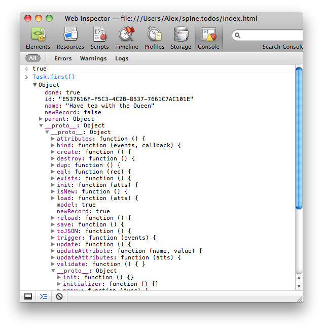

Spine
Spine is a lightweight framework for building JavaScript web applications. Spine gives you a MVC structure and then gets out of your way, allowing you to concentrate on the fun stuff, building awesome web applications.
Spine is opinionated and, although at first glance it might look similar to other frameworks like Backbone, it actually has quite a different take on things.
Spine is tiny, the library comes in at around 500 lines of JavaScript, that's about 2K minified & compressed. However, it's not about size, it's how you use it, and Spine certainly packs a punch!
Latest version: 0.0.4 (minified). Or check out the source code.
Overview
So, what's so special about Spine, how does it stand out from the crowd?
- Class library with real prototypal inheritance
- Lightweight controller implementation, based on Backbone's API
- Full model layer and ORM
- Ajax and HTML5 Local Storage adapters baked in
- Asynchronous server communication
- Works in all major browsers (Chrome, Safari, Firefox, IE >= 7)
- Simple and lightweight
- Thorough documentation
But don't take my word for it. Take a look at the source of the example applications below, and decide for yourself.
Tutorials
Spine has a growing set of tutorials, from layouts, tabs and sidebars to forms, updating records and validation.
Examples
Spine includes some great example applications to show you what's possible with the framework, and give you a practical understanding of the library. Although Spine is cross browser, it's worth noting that some of the examples are for WebKit based browsers only (Chrome/Safari), due to browser specific CSS (i.e. they'll just look really ugly in other browsers).
Todos is a very simple to-do application. Users can CRUD tasks, and mark them as complete.
The source is available on GitHub. [Demo]

Spine contacts is a simple address book, allowing users to CRUD contacts. The full source is available on GitHub. WebKit only. [Demo]

Holla is the most advanced example, and can be found on GitHub. Holla is a group chat application, and uses a combination of Rails, Juggernaut and Spine to let users chat in realtime. WebKit only. [Demo]

Setup
Using Spine is very straightforward, simply include the library in the page.
<script src="spine.js" type="text/javascript" charset="utf-8"></script>
Spine has no prerequisites, but is optimized to work with jQuery or Zepto. Certain extensions to Spine, such as the Ajax and Local Storage model persistence, require additional files located inside the lib folder.
Classes
Spine's class implementation is one of its features that makes it stand out from the crowd. Rather than copying properties to emulate inheritance, as most libraries, Spine uses JavaScript's native prototypal inheritance. This is how inheritance should be done, and means it's dynamic, properties are resolved at runtime.
Classes are created like so:
var Task = Spine.Class.create();
create() takes optional arguments of instance properties, and class properties.
Spine.Class.create([instanceProperties, classProperties]);
var User = Spine.Class.create({
name: "Carolin"
});
Alternatively you can add instance properties using include(), and class properties with extend().
var User = Spine.Class.create();
User.extend({
find: function(){ /* ... */ }
});
User.include({
name: "Tonje"
});
Since Spine doesn't use constructor functions, due to limitations with prototypal inheritance, classes are instantiated with init().
var User = Spine.Class.create({
name: "Tonje"
});
var user = User.init();
assertEqual( user.name, "Tonje" );
user.name = "Trish";
assertEqual( user.name, "Trish" );
Any arguments passed to init() will be forwarded to init(), the classes' instantiation callback.
var User = Spine.Class.create({
init: function(name){
this.name = name;
}
});
User.init("Martina");
assertEqual( user.name, "Martina" );
Sub-classes are created the same way base classes are, with create().
var Friend = User.create();
All of the subclass's parent properties are inherited.
var friend = Friend.init("Tim");
assertEqual( friend.name, "Tim" );
Because we're using real prototypal inheritance, properties are resolved dynamically at runtime. This means that you can change the properties of a parent class, and all its sub-classes with reflect those changes immediately.
var User = Super.Class.create();
var Friend = User.create();
User.include({defaultName: "(empty)"});
assertEqual( Friend.init().defaultName, "(empty)" );
Context
Context changes constantly in JavaScript, and it's very important your code is executing in the correct one. The most common cause of this is with event listeners, where callbacks will be invoked in the context of window or the element, rather than their original context. To resolve this, Spine's classes provides a few helper functions for maintaing context.
You can pass a function to proxy() to guarantee that it will be invoked in the current context.
var Tasks = Spine.Class.create({
init: function(){
$("#destroy").click(this.proxy(this.destroy));
},
destroy: function(){ /* ... */ }
});
Or pass multiple function names to proxyAll() in order to re-write them permanently, so they're always called with the classes' local content.
var Tasks = Spine.Class.create({
init: function(){
this.proxyAll("destroy")
$("#destroy").click(this.destroy);
},
destroy: function(){ /* ... */ }
});
Events
Spine.Events is the module Spine uses for adding event support to classes. To use it, just include/extend a class with the module.
var Tasks = Spine.Class.create();
Tasks.extend(Spine.Events);
Spine.Events gives you three functions, bind(), trigger(), and unbind(). All three have a very similar API to jQuery's event handling one, if you're familiar with that. bind(name, callback) takes a event name and callback. trigger(name, [*data]) takes an event name and optional data to be passed to handlers. unbind(name, [callback]) takes a event name and optional callback.
Tasks.bind("create", function(){ /* ... */ });
Tasks.trigger("create", ["some", "data"]);
You can bind to multiple events by separating them with spaces. Callbacks are invoked in the context the event is associated with.
Tasks.bind("create update destroy", function(){ this.trigger("change") });
You can pass optional data arguments to trigger() that will be passed onto event callbacks. Unlike jQuery, an event object will not be passed to callbacks.
Tasks.bind("create", function(name){
alert(name);
});
Tasks.trigger("create", "Take out the rubbish");
Although you may never use Spine.Events in your own classes, you will use it with Spine's models and controllers. We're going to cover those next.
Models
Models are the core to Spine, and absolutely critical to your applications. Models are where your application's data is stored, and where any logic associated with that data is kept. Models should be de-coupled from the rest of your application, and completely independent. The data associated with models is stored in memory under Model.records.
Creating models is slightly different from creating classes, since the create() function is already reserved by models. Models are created with the setup() function, passing in the model name and an array of attributes.
var Contact = Spine.Model.setup("Contact", ["first_name", "last_name"]);
Models are Spine classes, so you can treat them as such, extending and including properties.
Contact.include({
fullName: function(){
return(this.first_name + " " + this.last_name);
}
});
Model instances are created with init(), passing in an optional set of attributes.
var contact = Contact.init({first_name: "Alex", last_name: "MacCaw"});
assertEqual( contact.fullName(), "Alex MacCaw" );
Saving/Retrieving Records
Once an instance is created it can be saved in memory by calling save().
var Contact = Spine.Model.setup("Contact", ["first_name", "last_name"]);
var contact = Contact.init({first_name: "Joe"});
contact.save();
When a record is saved, Spine automatically creates an ID if it doesn't already exist.
assertEqual( contact.id, "AD9408B3-1229-4150-A6CC-B507DFDF8E90" );
You can use this ID to retrieve the saved record using find().
var identicalContact = Contact.find( contact.id );
assert( contact.eql( identicalContact ) );
If find() fails to retrieve a record, an exception will be thrown. You can check for the existence of records without fear of an exception by calling exists().
assert( Contact.exists( contact.id ) );
Once you've changed any of a record's attributes, you can update it in-memory by re-calling save().
var contact = Contact.create({first_name: "Polo"});
contact.save();
contact.first_name = "Marko";
contact.save();
You can also use first() or last() on the model to retrieve the first and last records respectively.
var firstContact = Contact.first();
To retrieve every contact, use all().
var contacts = Contact.all();
for (var i=0; i < contacts.length; i++)
console.log( contacts[i].first_name );
You can pass a function that'll be iterated over every record using each().
Contact.each(function(con){
console.log( con.first_name );
});
Or select a subset of records with select().
Contact.select(function(con){
if (con.first_name) return true;
});
Validation
Validating models is dirt simple, simply override the validate() function with your own custom one.
Contact.include({
validate: function(){
if (!this.first_name)
return "First name is required";
}
});
If validate() returns anything, the validation will fail and an error event will be fired on the model. You can catch this by listening for it on the model, notifying the user.
Contact.bind("error", function(rec, msg){
alert("Contact failed to save - " + msg);
});
In addition, save(), create() and updateAttributes() will all return false if validation fails. For more information about validation, see the form tutorial.
Serialization
Spine's models include special support for JSON serialization. To serialize a record, call JSON.stringify() passing the record, or to serialize every record, pass the model.
JSON.stringify(Contact);
JSON.stringify(Contact.first());
Alternatively, you can retrieve an instance's attributes and implement your own serialization by calling attributes().
var contact = Contact.init({first_name: "Leo"});
assertEqual( contact.attributes(), {first_name: "Leo"} );
Contact.include({
toXML: function(){
return serializeToXML(this.attributes());
}
});
If you're using an older browser which doesn't have native JSON support (i.e. IE 7), you'll need to include json2.js which adds legacy support.
Persistence
While storing records in memory is useful for quick retrieval, persisting them in one way or another is often required. Spine includes a number of pre-existing storage modules, such as Ajax and HTML5 Local Storage, which you can use for persistence. Alternatively you can roll your own custom one, take a look at spine.model.ajax.js for inspiration.
Spine's persistence is implemented via modules, so for HTML5 Local Storage persistence you'll need to include spine.model.local.js script in the page and for Ajax persistence you'll need spine.model.ajax.js.
To persist a model using HTML5 Local Storage, simply extend it with Spine.Model.Local.
Contact.extend(Spine.Model.Local);
When a record is changed, the Local Storage database will be updated to reflect that. In order to fetch the records from Local Storage in the first place, you need to use fetch().
Contact.fetch();
Typically this is called once, when your application is first initialized.
Using Ajax
Using Ajax as a persistence mechanism is very similar, extend models with Spine.Model.Ajax.
Contact.extend(Spine.Model.Ajax);
By convention, this uses a basic pluralization mechanism to generate an endpoint, in this case /contacts. You can choose a custom URL by setting the url property on your model, like so:
Contact.extend({
url: "/users"
});
Spine will use this endpoint URL as a basis for all of its Ajax requests. Once a model has been persisted with Ajax, whenever its records are changed, Spine will send an Ajax request notifying the server. Spine encodes all of its request's parameters with JSON, and expects JSON encoded responses. Spine uses REST to determine the method and endpoint of HTTP requests, and will work seamlessly with REST friendly frameworks like Rails.
read → GET /collection
create → POST /collection
update → PUT /collection/id
destroy → DELETE /collection/id
For example, after a record has been created client side Spine will send off an HTTP POST to your server, including a JSON representation of the record. Let's say we created a Contact with a name of "Lars", this is the request that would be send to the server:
POST /contacts HTTP/1.0
Host: localhost:3000
Origin: http://localhost:3000
Content-Length: 59
Content-Type: application/json
{"id":"E537616F-F5C3-4C2B-8537-7661C7AC101E","name":"Lars"}
Likewise destroying a record will trigger a DELETE request to the server, and updating a record will trigger a PUT request. For PUT and DELETE requests, the records ID is referenced inside the URL.
PUT /tasks/E537616F-F5C3-4C2B-8537-7661C7AC101E HTTP/1.0
Host: localhost:3000
Origin: http://localhost:3000
Content-Length: 60
Content-Type: application/json
{"id":"44E1DB33-2455-4728-AEA2-ECBD724B5E7B","name":"Peter"}
As you can see, the record's attributes aren't prefixed by the record's model name. This can cause problems with frameworks like Rails, which expect parameters in a certain format. You can fix this, by setting the ajaxPrefix option.
Spine.Model.ajaxPrefix = true;
If ajaxPrefix is true, Spine will send requests like the following, prefixing all the attributes with the model name.
PUT /tasks/E537616F-F5C3-4C2B-8537-7661C7AC101E HTTP/1.0
Host: localhost:3000
Origin: http://localhost:3000
Content-Length: 73
Content-Type: application/json
{"contact": {"id":"44E1DB33-2455-4728-AEA2-ECBD724B5E7B","name":"Peter"}}
It's worth mentioning here one of the major differences between Spine and other similar frameworks. All of Spine's server communication is asynchronous - that is Spine never waits for a response. Requests are sent after the operation has completed successfully client side. In other words, a POST request will be sent to the server after the record has successfully saved client side, and the UI has updated. The server is completely de-coupled from the client, clients don't necessarily need a server in order to function.
This might seem like an odd architectural decision at first, but let me explain. Having a de-coupled server offers some clear advantages. Firstly, clients have a completely non-blocking interface, they're never waiting for a slow server response for further interaction with your application. User's don't have to know, or care, about server requests being fired off in the background - they can continue using the application without any loading spinners.
The second advantage is that a de-coupled server greatly simplifies your code. You don't need to cater for the scenario that the record may be displayed in your interface, but isn't editable until a server response returns. Lastly, if you ever decided to add offline support to your application, having a de-coupled server makes this a doddle.
Obviously there are caveats for those advantages, but I think those are easily addressed. Server-side model validation is a contentious issue, for example - what if that fails? However, this is solved by client-side validation. Validation should fail before a record ever gets sent to the server. If validation does fail server-side, it's an error in your client-side validation logic rather than with user input.
When the server does return an unsuccessful response, an ajaxError event will be fired on the model, including the record, XMLHttpRequest object, Ajax settings and the thrown error.
Contact.bind("ajaxError", function(record, xhr, settings, error){
/* Invalid response... */
});
Events
You've already seen that models have some events associated with them, such as error and ajaxError, but what about callbacks to create/update/destroy operations? Well, conveniently Spine includes those too, allowing you to bind to the following events:
- save - record was saved (either created/updated)
- update - record was updated
- create - record was created
- destroy - record was destroyed
- change - any of the above, record was created/updated/destroyed
- refresh - all records invalidated and replaced
- error - validation failed
For example, you can bind to a model's create event like so:
Contact.bind("create", function(newRecord){
// New record was created
});
For model level callbacks, any associated record is always passed to the callback. The other option is to bind to the event directly on the record.
var contact = Contact.first();
contact.bind("save", function(){
// Contact was updated
});
The callback's context will be the record that the event listener was placed on. You'll find model events crucial when it comes to binding records to the view, making sure the view is kept in sync with your application's data.
Dynamic records
One rather neat addition to Spine's models is dynamic records, which use prototypal inheritance to stay updated. Any calls to find(), all(), first(), last() etc, and model event callbacks return a clone of the saved record. This means that whenever a record is updated, all of its clones will immediately reflect that update.
Let's give you a code example; we're going to create an asset, and a clone of that asset. You'll notice that when the asset is updated, the clone has also automatically changed.
var asset = Asset.create({name: "whatshisname"});
// Completely new asset instance
var clone = Asset.find(asset.id);
// Change saved asset
asset.updateAttributes({name: "bob"});
// Clone reflects changes
assertEqual(clone.name, "bob");
This means that you never have to bother calling some sort of reload() functions on instances. You can be sure that all instances are constantly in sync with their saved versions.
Controllers
Controllers are the last part to the trinity of Spine and are very simple, being more of a set of conventions than actual code. Controllers are the glue inside your application, tying the various components together. Generally, controllers deal with adding and responding to DOM events, rendering templates and keeping views and models in sync.
Controllers, like models, extend Spine.Class and so inherit all of its properties. This means you can use extend() and include() to add properties onto controllers, and can take advantage of all of Spine's context management. To create a controller, inherit a class from Spine.Controller.
var Tasks = Spine.Controller.create({
init: function(){
// Called on instantiation
}
});
The convention inside Spine is to give the controller a plural camel cased name of the model it is most associated with, in this case Tasks. Usually, you'll only be adding instance properties onto controllers, so you can just pass them as the first argument to create(). Instantiating controllers is the same as creating an instance of any other class, by calling init().
var tasks = Tasks.init();
Every controller has an element associated with it, which you can access under the instance property el. You can also set this element manually by passing it through on instantiation.
var tasks = Tasks.init({el: $("#tasks")});
In fact, anything you pass to init() will be set as properties on the newly created instance. For example, you could pass a record that a controller would be associated with.
var taskItem = TaskItem.init({item: Task.first()});
Inside your controller's init() function, you'll generally add event listeners to models and views, referencing a function inside the controller.
Events
Spine gives you a shortcut for adding event listeners onto DOM elements, with the events property.
var Tasks = Spine.Controller.create({
events: {"click .item": "click"},
click: function(e){
// Invoked when .item is clicked
}
});
events is an object in the following format {"eventType selector", "functionName"}. All the selectors are scoped to the controller's associated element, el. If a selector isn't provided, the event will be added directly on el, otherwise it'll be delegated to any children matching the selector.
Spine will take care of callback context for you, making sure it keeps to the current controller. Callbacks will be passed an event object, and you can access the original element the event was targeted on using event.target.
var Tasks = Spine.Controller.create({
events: {"click .item": "click"},
click: function(event){
var item = jQuery(event.target);
}
});
Since Spine uses delegation for events, it doesn't matter if the contents of el change. The appropriate events will still be fired when necessary.
As well as DOM events, Spine.Controller has been extended with Spine.Events, meaning that you can bind and trigger custom events.
var ToggleView = Spine.Controller.create({
init: function(){
this.items = this.$(".items");
this.items.click(this.proxy(function(){
this.trigger("toggle");
}));
this.bind("toggle", this.toggle);
},
toggle: function(){ /* ... */ }
});
Spine also has a global object Spine.App, that you can bind and trigger global events. This is one way that you can get controllers communicating with one other, without resorting to deep-coupling. Spine.App is aliased inside controllers to this.App.
var GlobalController = Spine.Controller.create({
init: function(){
this.el.click(this.proxy(this.click));
},
click: function(){
this.App.trigger("globalEvent", this.el);
}
});
Elements
When you first instantiate a controller, it's common to set a bunch of instance variables referencing various elements. For example, setting the items variable on the Tasks controller:
var Tasks = Spine.Controller.create({
init: function(){
this.items = this.$(".items");
}
});
Since this is such a common scenario, Spine provides a helper, the elements property. The is in the format of {"selector": "variableName"}. When the controller is instantiated, Spine will go through elements, setting the appropriate elements as properties on the instance. Like with events, all the selectors are scoped by the controller's current element, el.
var Tasks = Spine.Controller.create({
elements: {".items": "items"},
init: function(){
this.items.each(function(){
// ...
});
}
});
Proxying
Setting up a bunch of proxies in your controller's init() function is also a common scenario. For example:
var Tasks = Spine.Controller.create({
init: function(){
this.proxyAll("render");
Task.change(this.render);
},
render: function(){ /* ... */ }
});
As you've probably guessed, Spine provides a shortcut for adding proxies too, using the proxied property. Simply set proxied to an array of function names, and Spine will make sure those functions are always executed in the controller's context.
var Tasks = Spine.Controller.create({
proxied: ["render"],
init: function(){
Task.change(this.render);
}
});
Routing
Spine provides application routing based on the URL's hash fragment, for example the URL http://example.com/#/users has the hash fragment /users. Hash fragments can be completely arbitrary and don't trigger page reloads, maintaining page state. Your application can also be indexed by hash fragments using Google's Ajax Crawling specification.
Internally Spine uses the hashchange event to detect changes in the URLs hash. This event has only been developed recently, and only available in newer browsers. To support antiquated browsers, you can use the excellent jQuery hashchange plugin, which emulates the event using iframes and other clever trickery.
Adding routes
So, how to use the API? It's very simple, first you need to include spine.route.js, which contains the module Spine.Route. Then you can start adding routes inside your controller. Spine.Route gives you a routes() function inside controllers, which you can call passing a hash of routes and callbacks.
var App = Spine.Controller.create({
init: function(){
this.routes({
"/users/:id": function(id){
// Activate controller or something
console.log("/users/", id)
},
"/users": function(any){
console.log("/users")
}
});
}
}).init();
Route parameters, are in the form of :name, and are passed as arguments to the associated callback. You can also use globs to match anything via an asterisk, like so:
App.routes({
"/pages/*glob": function(name){
console.log("/pages/", name);
}
});
Routes are added in reverse order of specificity, so the most specific routes should be added first, and generic 'catch alls' should be added later. It's worth noting, especially if you're putting routes in the init() function of controllers, that routes shouldn't be added more than once. The examples above are fine, since the App controller is only ever going to be instantiated a single time.
One alternative is to skip out controllers, and add routes directly using Spine.Route.add(), passing in either a hash or a single route.
Spine.Route.add(/\/groups(\/)?/, function(){
console.log('groups')
});
Like you can see in the example above, routes can also be raw regexes, giving you full control over matching.
Initial Setup
When the page loads initially, even if the URL has a hash fragment, the hashchange event won't be called. It'll only be called for subsequent changes. This means, after our application has been setup, we need to manually tell Spine that we want to run the routes & check the URL's hash. This can be done by invoking Spine.Route.setup().
Spine.Route.setup();
Navigate
Lastly, Spine gives controllers a navigate() function, which can be passed a fragment to change the URL's hash. You can also pass navigate() multiple arguments, which will be joined by a forward slash (/) to create the fragment.
var Users = Spine.Controller.create({
init: function(){
// Navigate to #/users/:id
this.navigate("/users", this.item.id);
}
});
Users.init({item: User.first()});
Using navigate() ensures that the URL's fragment is kept in sync with the relevant controllers. By default, calling navigate() won't trigger any events or route callbacks. If you want to trigger routes, pass a true boolean as the last argument to navigate().
// Trigger routes by passing true
Spine.Route.navigate("/users", true);
HTML5 History
Spine also gives you the option of using HTML5's History API, which has the advantage of being able to alter the url without a page refresh or using hash fragments. This means cleaner URLs in a format your users are accustomed to.
To use the History API, instead of hash fragments, pass {history: true} to setup():
Spine.Route.setup({history: true});
HTML5 History support will only be enabled if this option is present, and the API is available. Otherwise, Spine's routing will revert back to using hash fragments.
However, there are some things you need to be aware of when using the History API. Firstly, ever URL you send to navigate() needs to have a real HTML representation. Although the browser won't request the new URL at that point, it will be requested if the page is subsequently reloaded. In other words you can't make up arbitrary URLs, like you can with hash fragments; every URL passed to the API needs to exist. One way of implementing this is with server side support.
When browsers request a URL (expecting a HTML response) you first make sure on server-side that the endpoint exists and is valid. Then you can just serve up the main application, which will read the URL, invoking the appropriate routes. For example, let's say your user navigates to http://example.com/users/1. On the server-side, you check that the URL /users/1 is valid, and that the User record with an ID of 1 exists. Then you can go ahead and just serve up the JavaScript application.
The caveat to this approach is that it doesn't give search engine crawlers any real content. If you want your application to be crawl-able, you'll have to detect crawler bot requests, and serve them a 'parallel universe of content'. That is beyond the scope of this documentation though.
Patterns
We've covered all the main options available in controllers, so let's have a look at some typical use cases.
The Render Pattern
The render pattern is a really useful way of binding models and views together. When the controller is instantiated, it adds an event listener to the relevant model, invoking a callback when the model is refreshed or changed. The callback will update el, usually by replacing its contents with a rendered template.
var Contacts = Spine.Controller.create({
init: function(){
Contact.bind("refresh change", this.proxy(this.render));
},
template: function(items){
return($("#contactsTemplate").tmpl(items));
},
render: function(){
this.el.html(this.template(Contact.all()));
}
});
This is a simple but blunt method for data binding, updating every element whenever a single record is changed. This is fine for uncomplicated and small lists, but you may find you need more control over individual elements, such as adding event handlers to items. This is where the element pattern comes in.
The Element pattern
The element pattern essentially gives you the same functionality as the render pattern, but a lot more control. It consists of two controllers, one that controls a collection of items, and the other deals with each individual item. Let's dive right into the code to give you a good indication of how it works.
var ContactItem = Spine.Controller.create({
// Delegate the click event to a local handler
events: {
"click": "click"
},
// Ensure functions have the correct context
proxied: ["render", "remove"],
// Bind events to the record
init: function(){
this.item.bind("update", this.render);
this.item.bind("destroy", this.remove);
},
// Render an element
render: function(item){
if (item) this.item = item;
this.el.html(this.template(this.item));
return this;
},
// Use a template, in this case via jQuery.tmpl.js
template: function(items){
return($("#contactsTemplate").tmpl(items));
},
// Called after an element is destroyed
remove: function(){
this.el.remove();
},
// We have fine control over events, and
// easy access to the record too
click: function(){ /* ... */ }
});
var Contacts = Spine.Controller.create({
proxied: ["addAll", "addOne"],
init: function(){
Contact.bind("refresh", this.addAll);
Contact.bind("create", this.addOne);
},
addOne: function(item){
var contact = ContactItem.init({item: item});
this.el.append(contact.render().el);
},
addAll: function(){
Contact.each(this.addOne);
}
});
In the example above, Contacts has responsibility for adding records when they're initially created, and ContactItem has responsibility for the record's update and destroy events, re-rendering the record when necessary. Albeit more complicated, this gives us some advantages over the previous render pattern.
For one thing, it's more performant; the list doesn't need to be re-drawn whenever a single element changes. Furthermore, we now have a lot more control over individual items. We can place event handlers, as demonstrated with the click callback, and manage rendering on an item by item basis.
Resources
All resources are located in the lib folder in Spine's repository.
- lib/spine.list.js - controller for managing lists, such as menus
- lib/spine.manager.js - class for managing controllers, basically a state machine
- lib/spine.model.ajax.js - module for adding Ajax support to Spine's models
- lib/spine.model.local.js - module for adding Local Storage support to Spine's models
- lib/spine.route.js - module for adding route support to Spine
Any questions, just ask on the Google Group.
Found a bug? Open a ticket on GitHub.
Spine has a full Jasmine test suite - you can run it from inside the browser here.
FAQ
Whoah - your API looks really similar to Backbone. Why should I use this instead? Well, it's true that Spine was inspired by Backbone, an excellent library, and its controller API is very similar. However, the similarities end there. Internally the library works very differently. For example, Spine has no need for
Collections, which are required for pretty much every model in Backbone. Spine provides a class library, and has very different ideas when it comes to server sync. Lastly, Spine is much simpler and half the size, go and check out the source.What's so good about prototypal inheritance? Let me give you a visual example of what I mean. Take a Spine class instance, you can follow its
__proto__property through its parents, all the way up toObject. 
Classical class libraries just copy properties to achieve inheritance, resulting in overhead when your class is first loaded, and doesn't allow for dynamically resolving properties.Doesn't the fact that servers are de-coupled, and clients never wait for a response, cause issues like conflicts? Nope, certainly not in my experience. Ajax requests to the server are sent serially, requests have to finish before the next one is fired, even if the client UI has already updated. For example, if a contact is created and then immediately destroyed, the create POST will complete before the DELETE request is sent. Certainly, there may be scenarios where you need to disable a UI element while waiting for a server response, but this isn't usually required, and so isn't the default inside Spine.
I still don't get the advantages of server de-coupling. Well, it's all about perceived speed - which makes a huge difference to the user experience. Perceived speed is just as important as actual speed since, at the end of the day, this is what users are going to notice. If we take Holla as an example, when a user sends a new chat message, we could wait until the message takes the roundtrip through the server and clients before appending it to the chat log. However, that would introduce a couple of seconds latency between the time a user submitted a new message, and it appearing in their chat log. The application would seem slow, and it would definitely hurt the user experience.
Instead, why not create the new message locally, thereby immediately adding it to the chat log. From a user's perspective, it seems like the message has been sent instantly. User's won't know (or care), that the message hasn't yet been delivered to other clients in the chat room. They'll just be happy with a fast and snappy user experience.
That's why server de-coupling and perceived speed is important, it gives a much better user experience.
Change Log
0.0.2: 17/04/2011 - first public release 0.0.3: 25/04/2011 - IE support, tests and fixes 0.0.4: 11/05/2011 - Spine.Manager, Spine.List and Spine.Tabs